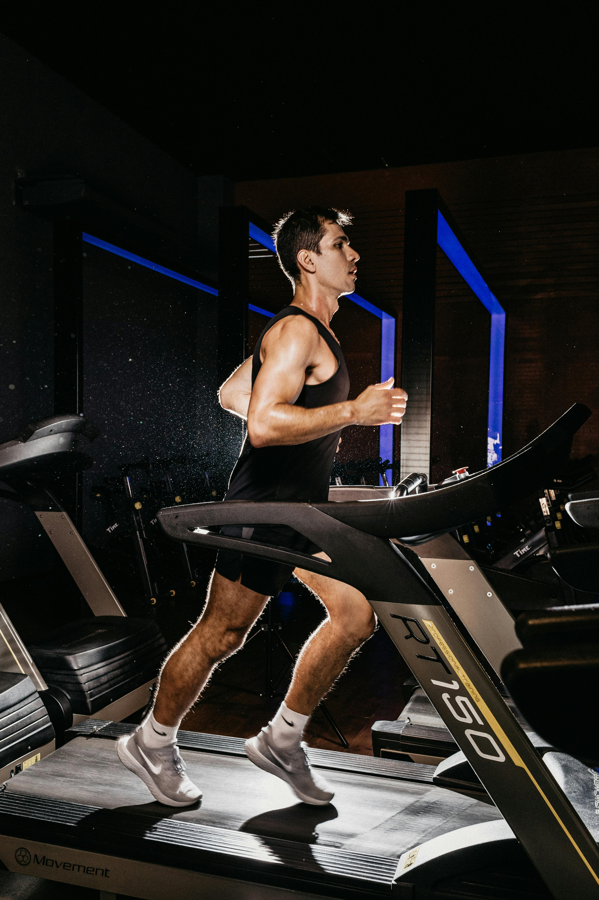
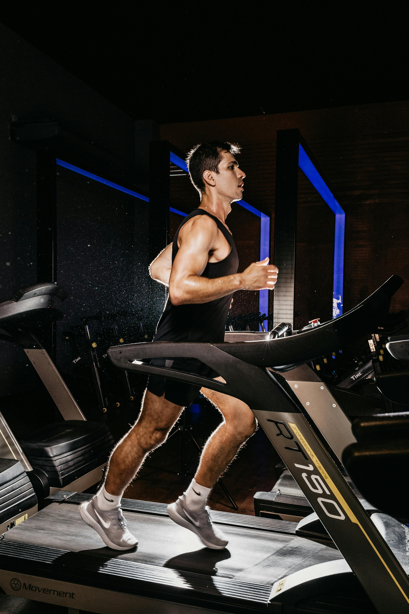

Sesiones de Entrenamiento
El entrenamiento es clave para alcanzar tus objetivos.
Aquí te mostramos cómo estructurar tus sesiones.
Cómo enfocar tus sesiones en función de tus objetivos
Ganar Masa Muscular
- Enfócate en ejercicios compuestos como sentadillas, peso muerto y press de banca. Usa pesos que te permitan hacer pocas repeticiones (6–8).
- Los ejercicios compuestos involucran muchos grupos musculares, permitiéndote ganar fuerza muscular y articular.
- Además, son ejercicios en los que puedes progresar rápidamente, lo cual te ayudará a motivarte.
- El descanso entre series, a diferencia de la creencia popular, debe ser generoso, de entre 2–3 minutos.
- Un descanso ineficiente aumenta la fatiga y empeora el rendimiento en el siguiente ejercicio.
- Recuerda que el descanso es parte del entrenamiento, y no un tiempo perdido.
- Combínalo con ejercicios en rango de hipertrofia (8–12 repeticiones) para un desarrollo muscular completo.
- No todos los ejercicios deben ser extenuantes. La sobrecarga progresiva es clave para el crecimiento muscular.
- Si no puedes hacer 8 repeticiones, reduce el peso. Si puedes hacer más de 12, aumenta el peso.
Pérdida de grasa
- Además de ejercicios para ganar masa muscular (que ayudará a consumir más calorías), incorpora entrenamiento en circuito (como HIIT).
- Los ejercicios de alta intensidad son ideales para quemar calorías y mejorar la resistencia cardiovascular.
- Realiza ejercicios de cuerpo completo, como burpees, saltos y kettlebell swings.
- Mantente activo, intenta caminar al menos 10.000 pasos al día.
- Evita largos periodos de sedentarismo, incluso pequeñas caminatas frecuentes ayudan.
- Controla tu ingesta calórica y prioriza alimentos ricos en nutrientes, como frutas, verduras y proteínas magras.
- Duerme al menos 7-8 horas por noche para mantener tu metabolismo funcionando correctamente.
Mejorar Resistencia
Realiza sesiones de cardio en función de tu objetivo.
Si recién empiezas, realiza 1-2 sesiones por semana.
Si eres un deportista con hábitos saludables, combina el entrenamiento en gimnasio con las sesiones de cardio específicas.
Ejercicios para cada grupo muscular
Pecho
Press de banca, flexiones, aperturas en mancuernas.

Espalda
Remo con barra, dominadas, jalones al pecho.
Piernas
Sentadillas, peso muerto, prensa de piernas.
Brazos
Curl de bíceps, extensiones de tríceps, fondos, elevaciones laterales.
Abdominales
Crunch en polea, elevaciones de piernas, plancha.
Errores comunes
1. Mala postura
No ejecutar bien un ejercicio puede llevar a que se produzcan lesiones. ¡Es mejor utilizar poco peso y buena técnica!
2. No calentar
El calentamiento es fundamental para preparar los músculos y evitar lesiones. Dedica al menos 10 minutos a calentar de forma activa. Debe ser un calentamiento suave, que te permita notar esa activación muscular.
3. No descansar
Aunque parezca mentira, tus músculos se construyen en el descanso. Con el ejercicio creamos las respuestas fisiológicas para que, cuando nuestro cuerpo se recupere, lo haga generando más masa muscular para adaptarse al ejercicio. Lento es el camino más rápido, ¡no te agobies si no ves resultados las primeras semanas!
4. Sobreentrenamiento
Después de ir unas semanas al gimnasio, es posible que tengas muchas ganas de entrenar, pensando que te has vuelto adicto.
Ve paso a paso. Roma no se construyó en un día. Respeta el volumen de entrenamiento y no entrenes de más. Más no es mejor
Nutrición básica y Glosario
Nutrición
La alimentación es clave para alcanzar tus objetivos. Una correcta nutrición ayudará a maximizar tus resultados. Asegúrate de consumir suficientes proteínas, carbohidratos y grasas saludables.
¿Qué comer antes y después del ejercicio?
Antes de entrenar, opta por carbohidratos complejos y proteínas magras. Después, consume una mezcla de proteínas y carbohidratos para la recuperación. Evita alimentos muy grasientos; su digestión es más larga y puede interferir con el ejercicio. Una idea de comida pre entrenamiento sería un plátano con un yogur o un batido de proteínas y pan integral.
Glosario
- Repetición: Una sola ejecución de un ejercicio.
- Serie: Un grupo de repeticiones.
- Calentamiento: Actividad previa al ejercicio para preparar el cuerpo.
Contacto
¡Ponte en contacto con nosotros para que te ayudemos a conseguir tus objetivos!